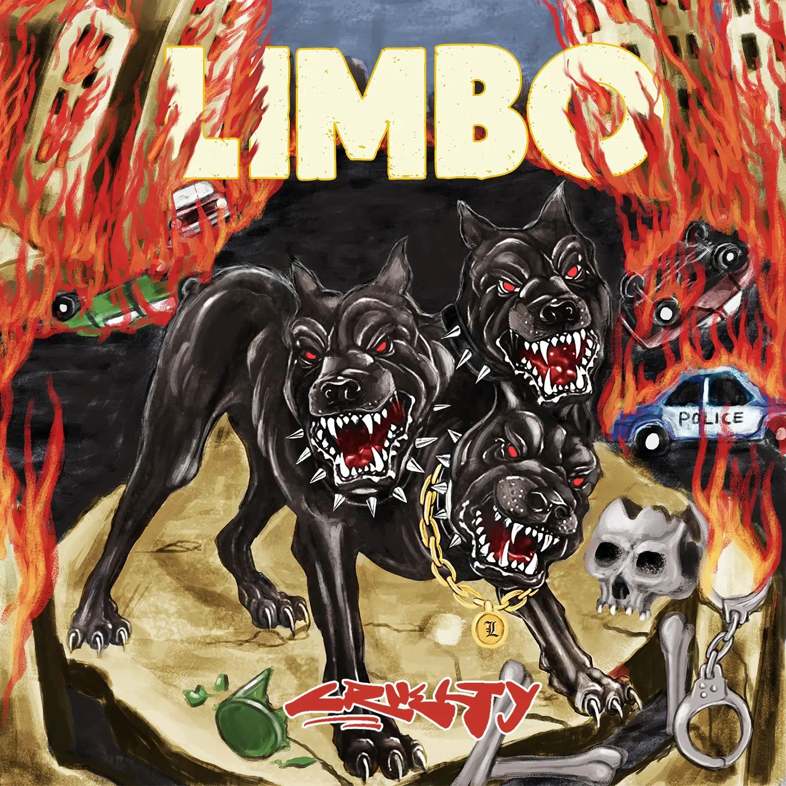
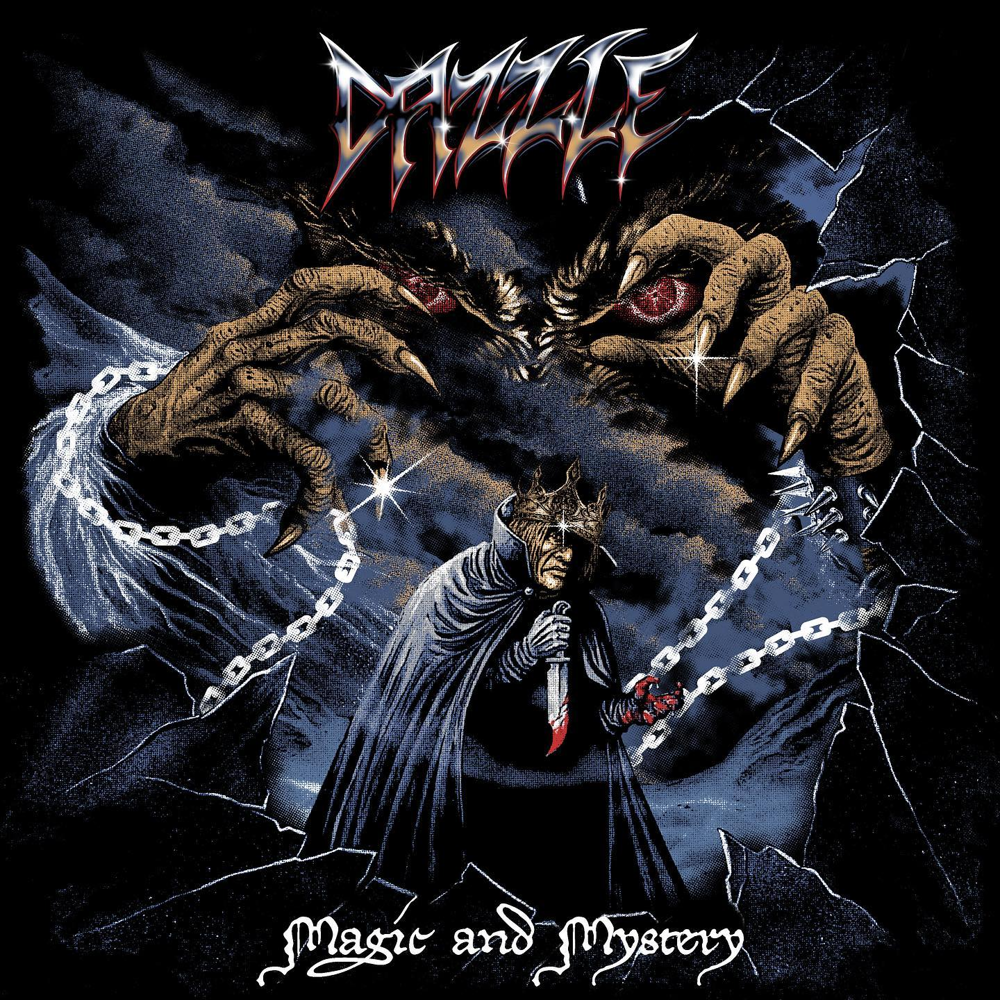
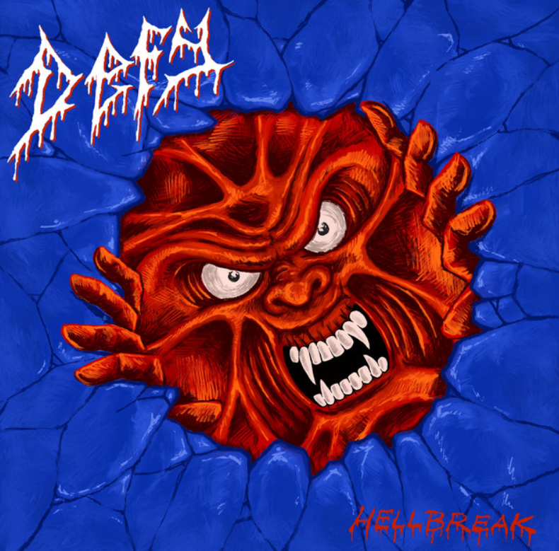

Album Populer

KEEP IT REAL
REAL TIGTH
"Real Tight" adalah gelombang kekerasan yang tak terbendung dari band hardcore legendaris, The Renegades.

LIMBO
CRUETLY
"CRUETLY" adalah sebuah album hardcore yang menghantarkan gelombang kemarahan yang tak terbendung .

DAZZLE
MAGIC & MYSTERY
"Magic & Mystery" adalah karya magnum opus yang menggabungkan cerita jalanan yang memukau dengan ritme yang menghentak

HASSS!
Wasted Time
Musiknya seringkali cepat, kasar, dan agresif, dengan lirik yang seringkali mengkritik pemerintah

DEFY
HELLBREAK
"HC" dalam konteks ini biasanya menampilkan pengaruh yang kuat dari budaya jalanan, dengan lirik yang berfokus pada pengalaman pribadi

MODERN GUNS
Where I Left You
"HC" bisa mencakup genre seperti thrash metal, death metal, atau metalcore. Musiknya seringkali keras, berat, dan berenergi tinggi